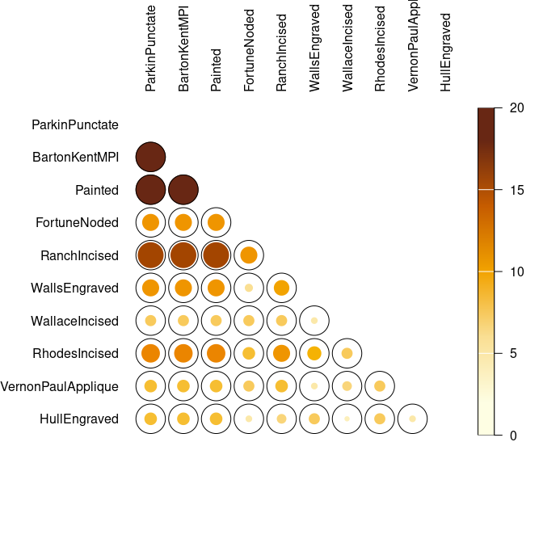

Overview
An easy way to examine archaeological count data. This package provides several tests and measures of diversity: heterogeneity and evenness (Brillouin, Shannon, Simpson, etc.), richness and rarefaction (Chao1, Chao2, ACE, ICE, etc.), turnover and similarity (Brainerd-Robinson, etc.). It allows to easily visualize count data and statistical thresholds: rank vs. abundance plots, heatmaps, Ford (1962) and Bertin (1977) diagrams, etc. tabula provides methods for:
- Diversity measurement:
heterogeneity(),evenness(),richness(),rarefaction(),turnover() - Similarity measurement and co-occurrence:
similarity(),occurrence() - Assessing sample size and significance:
bootstrap(),jackknife(),simulate() - Bertin (1977) or Ford (1962) (battleship curve) diagrams:
plot_bertin(),plot_ford() - Seriograph (Desachy 2004):
seriograph() - Heatmaps:
plot_heatmap(),plot_spot()
kairos is a companion package to tabula that provides functions for chronological modeling and dating of archaeological assemblages from count data.
To cite tabula in publications use:
Frerebeau N (2019). "tabula: An R Package for Analysis, Seriation,
and Visualization of Archaeological Count Data." _Journal of Open
Source Software_, *4*(44). doi:10.21105/joss.01821
<https://doi.org/10.21105/joss.01821>.
Frerebeau N (2023). _tabula: Analysis and Visualization of
Archaeological Count Data_. Université Bordeaux Montaigne, Pessac,
France. doi:10.5281/zenodo.1489944
<https://doi.org/10.5281/zenodo.1489944>, R package version 3.0.0,
<https://packages.tesselle.org/tabula/>.
This package is a part of the tesselle project
<https://www.tesselle.org>.Installation
You can install the released version of tabula from CRAN with:
install.packages("tabula")And the development version from GitHub with:
# install.packages("remotes")
remotes::install_github("tesselle/tabula")Usage
It assumes that you keep your data tidy: each variable (type/taxa) must be saved in its own column and each observation (sample/case) must be saved in its own row.
## Data from Lipo et al. 2015
data("mississippi", package = "folio")
## Ford diagram
plot_ford(mississippi)
## Co-occurrence of ceramic types
mississippi |>
occurrence() |>
plot_spot()
## Data from Conkey 1980, Kintigh 1989, p. 28
data("chevelon", package = "folio")
## Measure diversity by comparing to simulated assemblages
set.seed(12345)
chevelon |>
heterogeneity(method = "shannon") |>
simulate() |>
plot()
chevelon |>
richness(method = "count") |>
simulate() |>
plot()

Contributing
Please note that the tabula project is released with a Contributor Code of Conduct. By contributing to this project, you agree to abide by its terms.